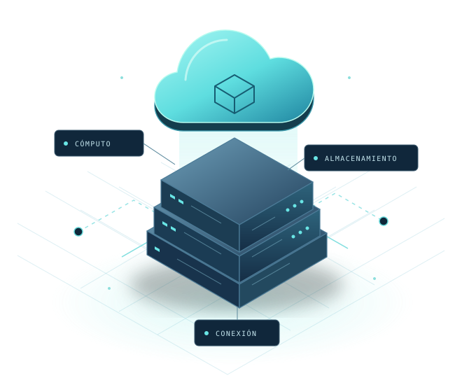

El proyecto / CloudScope
Una mirada personal
a la tecnología.
El espacio para conocer a la persona detrás de este recorrido educativo por Cloud Computing.

Sobre el creador
La fotografía y la reseña personal se incorporarán al finalizar el contenido del sitio.
Mientras tanto, puedes recorrer las páginas de fundamentos, servicios, tipos de nube y aplicaciones.
Explorar el contenidoSobre CloudScope
Aprender con una
visión conectada.
CloudScope es un sitio educativo sobre computación en la nube, elaborado para Desarrollo de Software V. Organiza el tema en un recorrido que relaciona fundamentos, modelos de servicio, despliegues y aplicaciones.
Cómo recorrerlo
Puedes seguir el orden de las páginas o utilizar el menú para ir a un tema concreto. En Servicios encontrarás un comparador para explorar cómo cambia la administración de las capas.
Las referencias están enlazadas en cada página y reunidas en la sección de fuentes.
Consultar las fuentes